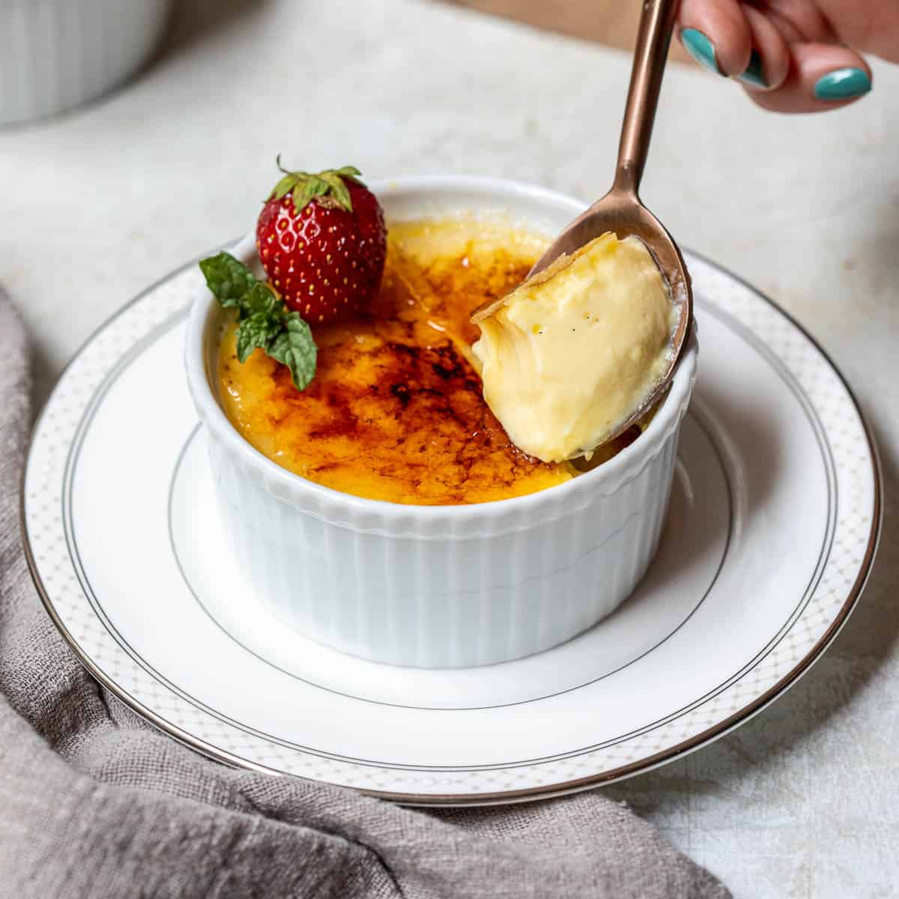

This is a classic French dessert with a creamy custard base topped with a caramelized sugar crust.
Simmer Milk: In a saucepan, add milk, cinnamon stick, lemon and/or orange peel,
salt, and vanilla bean pod (optional) then bring to a gentle boil.
Remove from heat then set aside.
Combine: In a bowl combine egg yolks, sugar and cornstarch then mix well.
Temper Eggs: Use a ladle to scoop milk from the saucepan,
and slowly drizzle it into the egg mixture, while whisking constantly, until incorporated.
Repeat with two more ladlefuls of milk, to temper the eggs (slowly warm them up).
Cook: Remove lemon peel, vanilla bean pod (if using), and cinnamon stick from milk
and stir tempered egg yolk mixture into the pan. Cook over medium-low heat,
stirring continuously for several minutes (about 7-10 minutes)
until thickened enough to coat the back of a spoon.
Test thickness by swiping your finger across the spoon:
it should leave a straight line.
Refrigerate: Ladle cream into a pie dish, or 6 individual ramekins*.
Cover and refrigerate for 4 hours, or up to 3 days.
Caramelize Sugar: Dust the top of each ramekin with one Tablespoon of sugar.
Use a kitchen torch to caramelize the sugar before serving.
Calories: 302kcal, Carbohydrates: 51g, Protein: 7g, Fat: 9g, Saturated Fat: 4g,
Polyunsaturated Fat: 1g, Monounsaturated Fat: 3g, Cholesterol: 198mg, Sodium: 56mg,
Potassium: 205mg, Fiber: 0.4g, Sugar: 43g, Vitamin A: 445IU, Vitamin C: 0.02mg,
Calcium: 178mg, Iron: 1mg